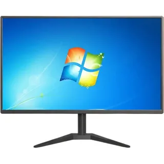

3-dars
🔹 Kompyuterning asosiy qismlari
- Kompyuter asosan texnik va dasturiy qismlardan tashkil topgan. Texnik qismlarga monitor, klaviatura, sichqoncha va sistem blok kiradi. Monitor axborotni ko‘rsatadi, klaviatura va sichqoncha orqali ma’lumot kiritiladi. Dasturiy qismga esa operatsion tizim va turli dasturlar kiradi. Ushbu qismlar birgalikda ishlagan holda kompyuterning to‘liq faoliyatini ta’minlaydi.
- Monitor — bu kompyuterning chiqish qurilmasi bo‘lib, u kompyuterda bajarilayotgan barcha jarayonlarni ekranda tasvir ko‘rinishida aks ettiradi. Monitor yordamida foydalanuvchi matnlarni o‘qiydi, rasmlar va videolarni ko‘radi, dasturlar bilan ishlaydi hamda o‘yinlar o‘ynaydi. U kompyuterdan kelayotgan ma’lumotlarni ko‘rish uchun xizmat qiladi va inson bilan kompyuter o‘rtasidagi asosiy aloqa vositalaridan biri hisoblanadi.
Monitor

- Kompyuter bloki — bu kompyuterning asosiy qismi bo‘lib, unda barcha muhim qurilmalar joylashgan. Kompyuter bloki ichida markaziy protsessor, operativ xotira, qattiq disk yoki SSD, ona plata, videokarta va quvvat bloki mavjud bo‘ladi. Aynan shu qurilmalar orqali ma’lumotlar qayta ishlanadi, saqlanadi va barcha buyruqlar bajariladi. Kompyuter bloki kompyuterning ishlashini ta’minlaydi va barcha tashqi qurilmalar, masalan monitor, klaviatura va sichqoncha bilan bog‘lanadi.
Kompyuter Bloki
.webp)
- Klaviatura — bu kompyuterga ma’lumot kiritish qurilmasi bo‘lib, u harflar, raqamlar va maxsus tugmalar yordamida matn yozish, buyruqlar berish hamda dasturlarni boshqarish uchun xizmat qiladi. Klaviatura orqali foydalanuvchi kompyuter bilan muloqot qiladi, ma’lumotlarni tez va qulay tarzda kiritadi.
Klaviatura
.webp)
- Sichqoncha — bu kompyuterga buyruqlar berish va kursorni boshqarish uchun mo‘ljallangan kiritish qurilmasi bo‘lib, u yordamida ekrandagi obyektlarni tanlash, bosish, ko‘chirish va ochish mumkin. Sichqoncha foydalanuvchining kompyuter bilan ishlashini oson va qulay qiladi.
Sichqoncha
.webp)